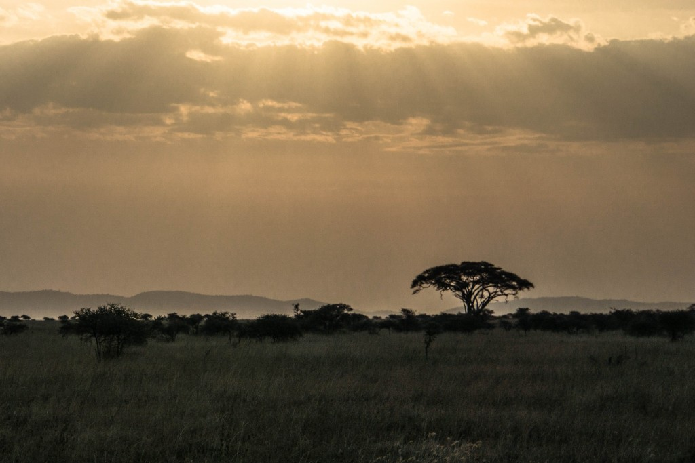
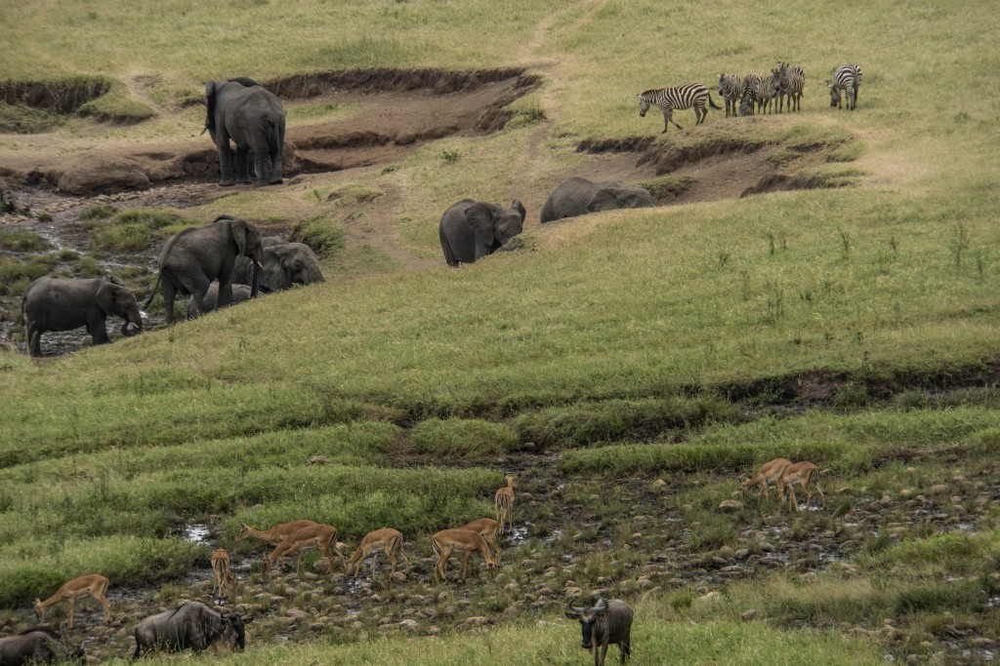
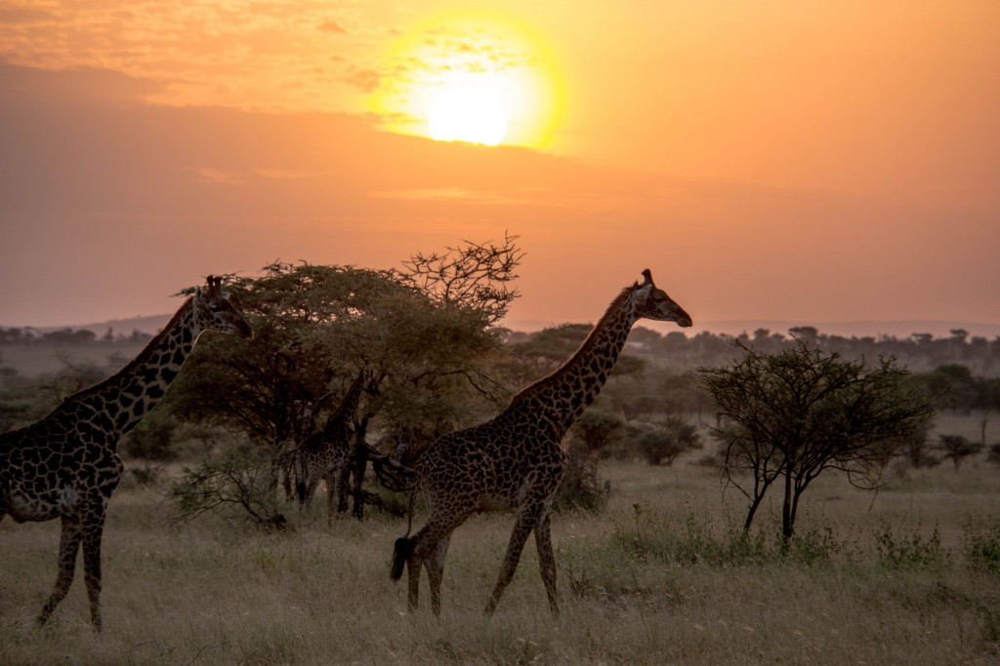

Wcale tego safari nie planowałam.
To znaczy planowałam, ale kiedyś w dalekiej przyszłości, bo to bardzo dużo kasy, bo nie mam odpowiedniego obiektywu, bo bardziej niż Wielką Piątkę chciałam zobaczyć goryle górskie w Rwandzie.
Jakby tego było mało jechałam w szczycie sezonu (a za tłumami nie przepadam), a spotkani przed wyjazdem znajomi, którzy na safari byli nie wyrażali zachwytu tą formą rozrywki (narzekali, że mało zwierząt, dużo ludzi,etc.).
Okazało się, że obiektyw dał radę (chociaż i tak wzdychałam z zazdrości widząc turystów z lepszymi), obserwacja zwierząt z bliska była fascynująca i było ich o wiele więcej niż się spodziewałam, safari okazało się jedną z najlepszych rozrywek turystycznych jaką kiedykolwiek miałam, a kiedy się skończyło nie żałowałam ani jednego wydanego dolara. Było warto!
W Tanzanii jest wiele parków narodowych gdzie można jechać na safari – w zależności od czasu, finansów i odległości jaką ma się czas przebyć. Dwa najbardziej znane to Serengeti krater Ngorongoro i tam właśnie postanowiłyśmy jechać i na własne oczy przekonać się czy te najsłynniejsze miejsca zasługują na swoją sławę.
Plan
Plan ustaliłyśmy wcześniej mailowo (post o organizacji safari i cenach wkrótce) i wyglądał tak:
Dzień 1: wyjazd z Arushy – po południu dojazd do Serengeti
Dzień 2: Serengeti
Dzień 3: Serengeti i dojazd do kempingu nad kraterem Ngorongoro
Dzień 4: krater Ngorongoro i powrót do Arushy.
Pozwolenia wjazdu do parku są ważne przez 24h, a więc to, że wjechaliśmy ok. 15 do Serengeti oznaczało, że do tej godziny trzeciego dnia musieliśmy wyjechać, wyjazd był jednocześnie godziną wjazdu do Ngorongoro Conservation Area, gdzie znowu nie mogliśmy przebywać dłużej niż 24h.
Nie oczekuj za dużo
Oczekiwania są najgorsze – człowiek wyobraża sobie nie wiadomo co i później jest tylko rozczarowanie. Powtarzałyśmy więc sobie, że to nie film, gdzie filmowcy mają mnóstwo czasu, a potem wybierają najlepsze ujęcia (Przed wyjazdem obejrzałam film National Geographic The Lion of Serengeti gdzie widać jak robot zbliża się do lwów, żeby nakręcić zbliżenia), ani nie zoo, gdzie zwierzęta mają ograniczoną przestrzeń, no i dzikie zwierzęta przecież nie będą czekać na nas, żeby nam się zaprezentować.
Dzień 1
Do Serengeti wjechaliśmy po południu – zostały chyba tylko trzy godziny do zmroku. Niewiele czasu, ale cieszyło nas każde napotkane zwierze, nawet jeśli stało samotnie, a takich właśnie była większość – mówiłyśmy sobie, że to dopiero początek i że jutro będzie lepiej.


W oddali, przy skałach stało kilka samochodów. Samochody stoją? Wiadomo, że coś się dzieje i trzeba podjechać.
Podjechaliśmy: gepardy!
To był pierwszy moment zachwytu, że to co do tej pory widziałam tylko na filmach nagle oglądam z tak bliska! Wydawało się to nierzeczywiste! Jeden,drugi, trzeci… i na dodatek nie zwracały na nas uwagi!
Oczywiście w zoo byłam nie raz, ale obserwowanie zwierząt w ich naturalnym środowisku, na tak wielkiej przestrzeni okazało się czymś zupełnie innym – nie mogłam się wręcz napatrzeć. I pewnie byśmy tak stali i patrzyli, gdyby nagle jeden nie podniósł się. Potem drugi. Stanęły odwróciły gdzieś głowę patrząc w tę samą stronę (my też tam spojrzeliśmy, nic oczywiście nie dostrzegając) i nagle zerwały się do biegu!


Gazela! Gonią gazelę! Ruszyliśmy drogą widząc jak biegną w oddali, prawie chowając się w trawie.
Jakby się oglądało jakiś ważny mecz – ekscytacja ogromna! Złapią czy nie złapią? Dogonią?
Uciekła.
Rozczarowanie. Gepardy zatrzymały się, stanęły na kamieniu i rozejrzały wokół, za chwilę schowały się w trawie i zniknęły.
Może jednak tych zwierząt jest dużo? Może są zawsze w tych samych miejscach i kierowcy po prostu wiedzą gdzie jechać? No bo jak to inaczej wytłumaczyć, zwłaszcza, że po krótkim czasie na naszej drodze pojawiły się słonie…
Słonie – prawie na dotknięcie ręki. Podobnie jak gepardy nie wracały na nas uwagi, przeszły przez drogę, obok samochodu, tak jak byłby on jakimś mało interesującym drzewem, które trzeba ominąć.


– Nie podobało mi się – powiedział mi znajomy kilka dni przed wyjazdem opowiadając o swoim safari – jeden lew czy słoń i osacza go kilka lub kilkanaście samochodów.
Tego właśnie się bałam, że tak będzie, że trzeba będzie 'gonić’ zwierzę a zrobienie zdjęcia okaże się niemożliwe, bo w kadr będą wchodziły inne samochody.
Owszem, było czasami tak, że stało kilka samochodów, które przyglądały się temu co się dzieje wokół, jednak o podjeżdżaniu blisko do zwierzęcia nie mogło być mowy – w Tanzanii off-road jest zabroniony i wszystkie jeepy jeżdżą grzecznie wyłącznie po drogach, bo kary za zjazd z trasy są wysokie. Tak więc to czy zobaczy się jakieś zwierze z bliska zależy od tego, czy zwierzę zdecyduje się podejść bliżej. Nie zawsze podchodziły, widzieliśmy je tylko z daleka i lornetka była niezbędna do obserwacji.
Samochodów też nie było dużo, to ogromny park i jakoś się rozjechały. Owszem, kiedy jeden stawał i stał był to znak dla kolejnego, że warto się zatrzymać i przyjrzeć, ale tłumów raczej nie było (z dwoma wyjątkami).
Były gepardy, były słonie czas na… lwa!
W zasadzie to nie lew a lwica. Rozglądała się leżąc na skałach, a potem się odwróciła i odeszła, położyła się z drugiej strony i leżała.


Taki początek? Aż nie mogłyśmy w to uwierzyć! A więc to właśnie jest tak jak pokazują we wszystkich filmach National Geographic czy Discovery 🙂
Jechaliśmy drogą, skręcaliśmy gdzieś, zawracaliśmy, dach był cały czas podniesiony, żeby łatwo było obserwować – pierwsze stada gazeli, perliczki (jakie urocze!), małpki skaczące po drzewach, żyrafy, dikdik schowany za gałęziami.
– Dlaczego nie zachwycacie się dikdikiem? – nie mogła nadziwić się Elwira.
Nie no, fajny był z tymi ogromnymi oczami, ale żeby aż tak się zachwycać?


Dzień powoli się kończył, już jechaliśmy w stronę pierwszego obozu, kiedy zobaczyliśmy kilka samochodów stojących na drodze: tam coś jest, ale co?
Podjechaliśmy, stanęliśmy przy drodze, wszyscy patrzyli w prawo więc spojrzeliśmy w prawo. Nic.
Ale wszyscy czegoś wypatrują. Czego?
– Lampart – odezwał się Anton, nasz kierowca i przewodnik.
– Gdzie?
– Na drzewie.
– Gdzie???
– Tam, z prawej. Ogon mu zwisa.
Faktycznie, ogon zwisał, ale że to ogon byłam w stanie dostrzec tylko wtedy gdy już wiedziałam co to i gdzie patrzeć. I tylko przez lornetkę.
To właśnie był jeden z tych momentów, kiedy zazdrościłam ludziom lepszego sprzętu – moje 200mm ledwo dawało radę.
Poniżej lampart z 'bliska’ i drzewo, tak jak je widzieliśmy – widzicie lamparta?
Dostrzeglibyście go z drogi? Ja nie. Bez przewodnika nigdy w życiu.


A potem już tylko nasz pierwszy zachód słońca na afrykańskiej sawannie. Był przepiękny, kończył się fantastyczny dzień, a my zastanawiałyśmy się co będzie jutro skoro już w jedno popołudnie było tyle wrażeń.

Dzień 2.
Sposobów na zwiedzanie parku jest kilka. Można wstać wcześnie (i warto bo wtedy jest więcej zwierząt!), można się wyspać. Są grupy, które wracają do obozu na lunch, odpoczywają, a później wyjeżdżają ponownie, inne jeżdżą cały dzień.
– Chcecie odpocząć w środku dnia czy może zaczynamy wcześnie i jedziemy pod granicę z Kenią i zobaczymy wielką migrację? – padło pytanie dzień wcześniej i nie musiałyśmy się wcale zastanawiać: oczywiście, że wstajemy na śniadanie o szóstej.
Serengeti w języku Masajów znaczy nieskończone równiny (ang. endless plains) i drugiego dnia przekonałam się jak trafna jest ta nazwa.
Mijałyśmy zwierzęta stojące pojedynczo i w grupach i nie mogłam powstrzymać się od jeszcze jednego zdjęcia, i jeszcze jednego – z przodu, z tyłu, z boku, z bliska i z daleka. Anton mówił, że będzie ich jeszcze więcej, ale trudno nam w to było uwierzyć.


Potem zwierząt było już mniej – były takie miejsca, gdzie długo nie wiedzieliśmy żadnych. Samochodów też było bardzo niewiele, przez większość czasu jechaliśmy sami z rzadka mijając jakiegoś jeepa. Krajobraz się zmieniał, raz była wysoka trawa, w której chowały się zwierzęta, innym razem bardzo niska, prawie wypalona, krajobraz z drzewami zmieniał się w bezkresną łąkę.
Po okresie 'nudy’, kiedy to przyglądałyśmy się tylko zmieniającym się krajobrazom, zaczęły się znowu pojawiać zwierzęta i było ich coraz więcej. I w końcu zebry! DUŻO zebr! Całe stada zebr – jakie one są piękne!


Krokodyl, dikdiki, bawoły, przeróżne antylopy, gnu, lwy (o lwach więcej we wpisie Simba – król zwierząt), sępy kończące obiad, szkielet leżący przy drodze – ciągle coś się działo.


Jechaliśmy i jechaliśmy, ciągle jechaliśmy i aż się zaczęłyśmy zastanawiać po co tak gonimy, czy warto jeszcze dalej i wtedy na drodze były już tylko gnu i zebry – koniec wielkiej migracji. Czy wiecie, że to zebry zapamiętują drogę i wiedzą jak iść a gnu za nimi bezwolnie podążają? Zebr jest około 200 tysięcy, gnu ponad 1,5 miliona.
Pod granicą z Kenią, gdzie w końcu dotarliśmy, widziałam stada zebr i gnu – nie szły razem, tak jak to sobie wyobrażałam (i jak pewnie było trochę wcześniej, bo z powodu suszy wielka migracja była w tym roku szybciej), były bardziej rozproszone, ale gdziekolwiek spojrzałam, po horyzont było widać ruszające się zwierzęta. Wyglądały jak małe kropki i tylko po tym, że się ruszają widać było, że to zwierzęta a nie drzewa.


– Mówiłyście, żeby nie spodziewać się, że będzie tak jak na filmach przyrodniczych, a przecież tak właśnie jest! – stwierdziła Justa, kiedy zatrzymaliśmy się w pewnym momencie na drodze. Zatrzymaliśmy się, bo przed nami rozgrywała się niezwykła scena – Słonie, zebry, gnu i gazele w jednym miejscu przy wodzie, tak jakbyśmy patrzyły na ruchomy obraz. Brakowało nam tylko głosu Krystyny Czubówny, która opowiadałaby o zwierzętach (Czy ktoś jeszcze pamięta filmy przyrodnicze, w których K.C była lektorką?).

Pamiętam, że patrząc na tę scenę nie mogłam się zdecydować czy tych zwierząt jest mało czy dużo. Wydawało się, że mało – parę tutaj, kilka tam, gdzieś dalej kolejne. Zwierzęta wydawały się bardzo małe, a przecież niektóre z nich były tuż przy drodze. Spójrzcie na zdjęcie – ile słoni zmieściło się na jednym!
Anton był bardzo cierpliwy: zatrzymywał się, podjeżdżał, tłumaczył, czekał aż zrobimy zdjęcia, wypatrywał kolejnych zwierząt. Przed zebrami zatrzymywaliśmy się wiele razy – przeze mnie, bo to ja ciągle chciałam je fotografować i nie miałam dosyć.
Zebry na przechodzące przez drogę? Musimy się zatrzymać!
Zebry pijące wodę? Stop!
(i wiele wiele innych)
Każda z nas miała swoje ulubione zwierzęta. Moje, jak już wiecie to zebry. Eliza uwielbiała żyrafy, Elwira pantery (tych nie było dużo, dwie tylko), a Justa powiedziała, że lubi wszystkie.
Dla mnie żyrafy nie były tak zgrabne jak zebry (ach te tyłki w paski!), ale kiedy się odwracały i patrzyły w stronę aparatu też były wdzięcznym obiektem do fotografowania (widzicie jakie mają długie rzęsy?).


Hipopotamy były bardzo zabawne przez swoją 'otyłość’ i niezgrabność. Tylko ten zapach! Zapach był ohydny – jeszcze zanim zbliżyliśmy się do ich miejsca wiadomo było, że już są. Smród jak najgorszej toalecie! Krzywiłyśmy się robiąc zdjęcia i przyglądając się jak leniwie ruszają się prawie całkowicie przykryte wodą – od czasu do czasu któryś szeroko otwierał paszczę, a ja próbowałam złapać to na zdjęciu.


Spędziłyśmy w dżipie ponad 12 godzin, jednak wcale nie byłam zmęczona – tyle się działo wokół nas, że mogłabym jeździć drugie tyle. Zbliżał się wieczór więc wróciliśmy na kemping gdzie przywitał nas słoń i kolejny zachód słońca nad sawanną.


Dzień 3.
Oczekiwałyśmy że pobudka będzie wcześnie rano.
– Śniadanie o 6? – zapytałyśmy przed pójściem spać.
– Nie, jutro o 5.40.
Jak trzeba to trzeba – wiedziałyśmy już, że warto wcześnie wstać, więc nie narzekałyśmy tym bardziej, że bardzo chciałam zobaczyć wschód słońca na sawannie poza kempingiem.
Na początku było szaro – ciemno z jednej strony, jasno z drugiej i nic nie zapowiadało, że będzie ładnie.


A potem wzeszło słońce i było piękne – wschody, tak samo jak zachody słońca były bardzo krótkie, to już wiedziałam.

Wyjechaliśmy z obozu chcą poszukać gepardów, ale okazało się, że to zdecydowanie jest dzień lwów – były też hieny, sępy, słonie, małpy, mnóstwo antylop i gazel, których nazw nie mogłam zapamiętać. Było dużo zwierząt tylko żadnego geparda.


Zatrzymaliśmy się kilkakrotnie przy innych samochodach, żeby zapytać o gepardy – nikt ich tego dnia nie spotkał, pewien kierowca powiedział, że od czterech dni nie widzieli żadnego. Cóż, tak właśnie czasami w parku jest, zwierzęta nie czekają na turystów, nie zawsze da się zobaczyć to co się chce.
Było już południe, musieliśmy wracać na kemping zjeść lunch i spakować się – nasze pozwolenie dobiegało końca, około trzeciej powinniśmy opuścić park.
Jechaliśmy, a większość zwierząt gdzieś 'zniknęła’. Nagle Anton zatrzymał się i zaczął uważnie się czemuś przyglądać. Wytężyłyśmy wzrok. Nic poza wysoką trawą.
– Gepard – powiedział w końcu – tam w trawie, koło drzewa.
Złapałyśmy za lornetki. Faktycznie, daleko w trawie siedział gepard.
Siedział i patrzył w lewo na gazelę, gazela stała nieruchomo.
Widzicie gazelę lewej? Taka, drobna w połowie zdjecia.
Widzicie geparda pod drzewem? Nie? Nic dziwnego, bo nie zdążyłam mu zrobić zdjęcia zanim po chwili znudzony położył się w trawie.
Wyjechaliśmy z Serengeti i mijając po drodze kilka masajskich wiosek dojechaliśmy na kemping nad kraterem Ngorongoro. Krater Ngorongoro zdecydowanie zasługuje na swoją własną opowieść więc zapraszam na część drugą Jak wygląda safari? – część 2 (Ngorongoro)


{kind=link}
{kind=link}
{kind=link}
{kind=link}
{kind=link}
{kind=link}
{kind=link}
{kind=link}
{kind=link}
{kind=link}
{kind=link}
{kind=link}
{kind=link}